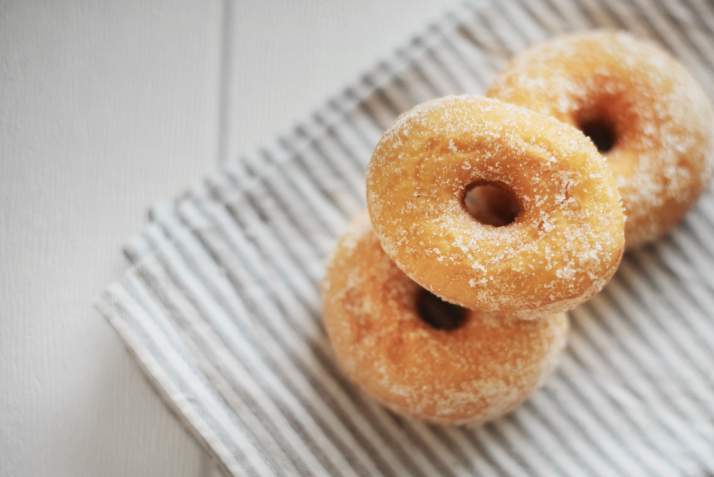
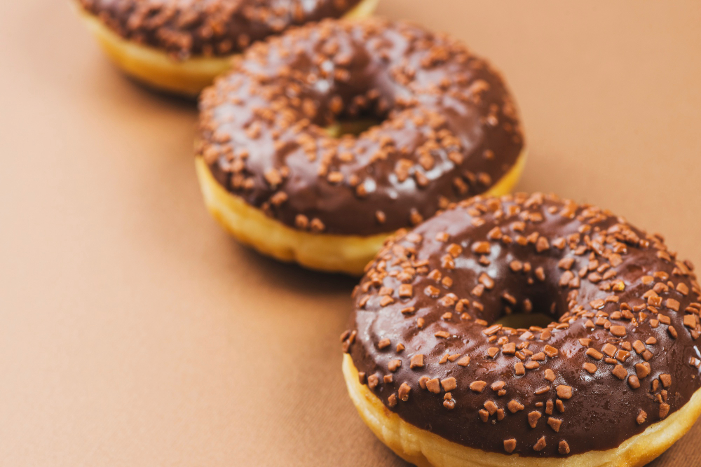

The dessert I love
If you ask me what kind of desserts I like, I’d say any halal ones. If you ask me what kind of snacks I often make at home, I’d say donuts. Not the fancy kind you find in stores—just simple, eggless donuts dusted with icing sugar.
You might wonder, "How often do you make them?" Well, almost every week! That’s how much I love them. They’re easy to make, delicious (at least to me), and don’t require any special tools.
So, on my very first web page, I want to share my love for donuts and show you how I make them.
Let's prepare our ingredients!
Ingredients:
- 250 grams bread flour
- 30 grams sugar
- 1 gram bread improver (optional)
- 4 grams yeast
- 130–150 ml water
- 30 grams butter or margarine
- 3 grams salt
Instructions:
- Mix the dry ingredients—bread flour, sugar, bread improver (if using), and yeast. Add 130 ml of water and start combining. If the dough feels too dry, gradually add a bit more water.
- Once the mixture is slightly combined, add the butter (or margarine) and salt. Knead the dough until smooth. If you're doing it by hand, this may take about 15 minutes or more.
- Let the dough ferment for 30 minutes. Cover it with a damp cloth or plastic wrap to prevent drying out.
- After fermenting, gently press out the air (degassing) and divide the dough into 15 equal pieces, about 27–28 grams each. If you prefer bigger donuts, adjust the size to your liking.
- Shape each piece into a smooth ball and let them rest for 20 minutes.
- Shape the donuts by making a hole in the center of each dough ball.
- Proof the shaped dough for 60–75 minutes until they double in size.
- Heat oil over low flame and fry the donuts until golden brown. Be sure to preheat the oil before frying for the best results.
- Let the fried donuts cool completely.
- Add your favorite toppings! I keep it simple with icing sugar, but you can get creative—try melted chocolate, matcha glaze, or anything you like.
- Enjoy your homemade donuts!
Final Words
I hope you find this recipe easy to follow and give it a try at home. Thanks for visiting my first donut recipe page!

